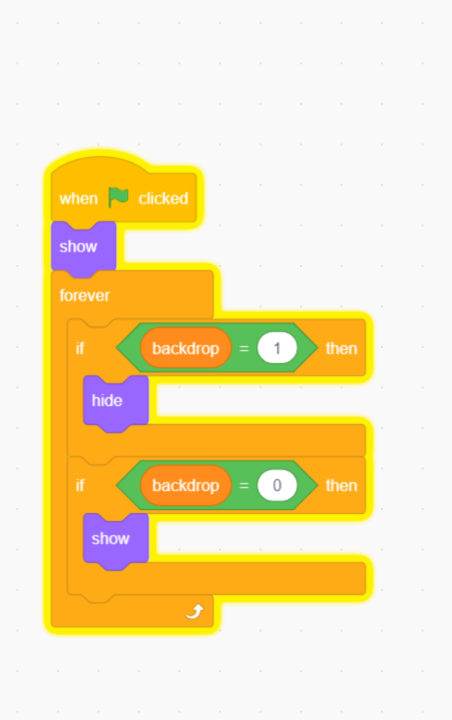
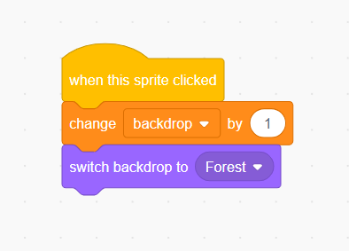

KidzCoding Hour of Code - Stage selection
Activity:
In this activity, students will make a simple stage changing game using loops, variables, and events.
Learning Objectives:
- Learn how a variable can be used to make coordinated changes
- Learn the show and hide feature of scratch
- Basic understanding of how buttons work
Materials:
Coding Time!
Step one: creating the sprites
- First, you want to create three sprites with text describing a background within scratch.
- Then add the three corresponding backgrounds to the project
- Line them up in a line
- Create an arrow sprite
- Create a variable and call it “backdrop”
Step two: when started…
- First, for the three location sprites, make it so that when the program is started, they are shown. (you can find the “show” block in the “looks” panel.
- Below the show block, add a forever loop with two if statements inside.
- Then, make it so that for all three sprites, when the variable “backdrop” is equal to 1, the sprite hides, and when “backdrop” is equal to 0, its shown
Step three: adding interactivity
- First, for the three sprites that aren’t the arrow, make it so that when they are clicked, the variable “backdrop” is changed by 1 and the actual backdrop is set to the corresponding backdrop
Step four: programming the background
- Select the current backdrop
- Make it so that when the program is started, the backdrop is set to a blank background and the variable “backdrop” is set to zero.
- Then, in a forever loop, make it so that if the variable “backdrop” equals zero, switch the backdrop to the blank one
Step five: adding a back button
- Select the arrow sprite
- Have it aiming towards the left
- Make it so that when the arrow is clicked, the variable “backdrop” is changed by negative one
Congratulations, you have just completed an Hour of Code!
Feel free to mess around with the code to make it suitable for your intentions